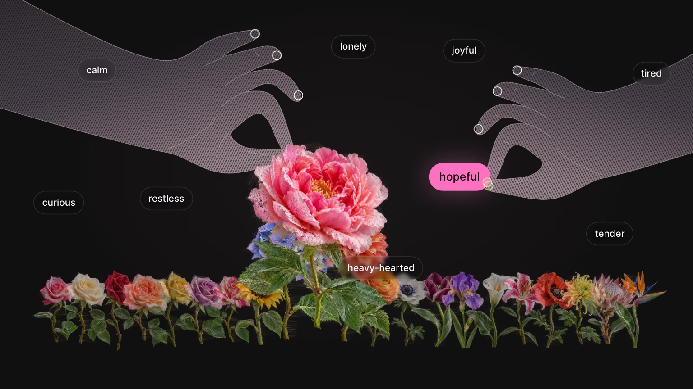

The Meta Rose: Play

For Minnie Park, the rose stands for both the viewer and her own feelings. Petals and thorns share a stem, as contradictory feelings can share a body. Each work in this series sets flowers and vintage print textures in motion through a different gesture.
P01S00 · Your Kibun Picker
Move one hand across a row of 21 flowers and pinch your thumb and index finger to choose one. With your other hand, collect as many drifting words as you like. Your flower and words come together on a card for today’s kibun (기분).